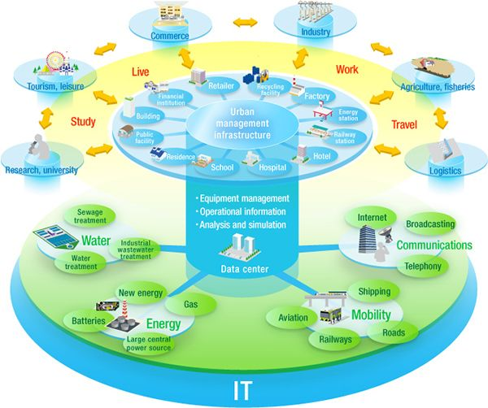
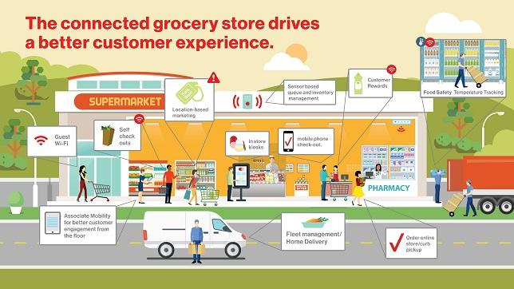

The future is here. See how IoT and M2M can help transform business.
A universe of linked devices, services and people is the key to a new era of competitiveness.
E-TECH Smart Cities and Communities solutions
Build smart cities with solutions that help improve quality of life.
From population growth to rapid urbanization, communities are facing new challenges to maintaining high standards of livability, resiliency and sustainability. Using innovative Internet of Things (IoT) and machine-to-machine (M2M) communication solutions, city executives can help improve efficiency and revolutionize cities to create a better quality of life for both work and play. See how our Smart Cities solutions can make a difference in your world.
Help make your community smart, connected and safe.
Smart communities are cities, counties, sports venues, college campuses and corporate facilities that leverage technologies to better engage with citizens. E-TECH helps public-and private-sector planners increase economic development, drive citizen engagement and promote sustainability with our suite of smart city solutions. In addition to the IoT and M2M technologies we’ve developed, we’ve also acquired companies like Sensity, an IoT-based platform that supports intelligent LED sensors and other smart city solutions, and LQD WiFi, which makes interactive kiosks that inspire interactive community engagement. We’re developing viable and comprehensive smart platforms that help you unify disparate systems, use resources more efficiently and address an array of community challenges.
With E-TECH Smart Cities and Communities, you can collect critical data and gain near real-time visibility into vital operations. This helps you streamline the decision-making process and respond more quickly. For example, if a water pipe breaks, sensors will be able to detect the sudden pressure change and notify public works officials, who could then dispatch the closest field crew for repair. In the event of area flooding, residents could receive alerts, traffic lights could be adjusted to steer drivers toward safety and digital signage could be used for information sharing. This is one of the many ways in which smart cities technology can help communities become more resilient.
When a city is a truly smart city, it is able to collect data from IoT and connected machine technologies. Communities can benefit from revenue generation opportunities, make efficient use of limited resources and attract businesses, residents and workers and public servcies:
- Intelligent Lighting - A smarter way to light up your community
- ntelligent Video - Help create a safe community.
- Intelligent Traffic Management - Smooth traffic flow with smarter technology.
- IoT Security Credentialing - Keep bad things from happening to good data: Help protect your data and keep your connections secure. IoT Security Credentialing (IoT SC) gives you an extra layer of security for your Smart City solutions and apps on top of the features already in your network.
Speak with a Smart Communities expert.
We can help public agencies and enterprises of all sizes create safe, sustainable, and more enjoyable environments with Smart Cities. Let us show you how we can help you better manage your resources and create places people want to live and work.
Contact us : chen.wang@ebdglobal.com
Mobile commerce
Deliver better customer experiences.
Providing the best experiences to customers is critical for your business to grow. Businesses capable of providing them can outpace the competition. With our mobile commerce solutions that use Internet of Things(IoT) and machine-to-machine(M2M) technologies, your business can engage customers better by delivering truly immersive experiences that are built specifically for them.
Mobile Point of Service
Make shopping more convenient.
Customers expect your sales associates to be available—and informed—anytime and anywhere. If they are too busy or can’t answer a question quickly, the customer will go somewhere else—and you’ll lose a potential sale. Our mobile point-of-service solutions make it easy to check customers out or help them with buying decisions by quickly answering questions, checking inventory levels or making purchase recommendations. And with our mobile payment services, customers can pay without a wallet, which opens up new options on how to pay for goods and services. Now there’s no heavy equipment or physical location involved. With our IoT and M2M solutions, your customers get the help they need and can bypass long checkout lines, which improves their shopping experience and makes it more likely that they’ll be back.
Mobile Reach
Expand your sales reach.
Adding mobility into your sales operations gives you the agility to act quickly on new market opportunities when and where they pop up. Our mobile kiosk services let you set up secure, wireless kiosks quickly and easily, in highly active areas, like retail locations, hotels, airports and sports arenas. And with their built-in wireless and GPS capabilities, you know the exact location of each kiosk, which speeds restocking and maintenance. Now you can deliver your products and services wherever your customers are likely to be.
Automated Retail
Push sales higher with automation.
Smart retail machines connected to the Internet of Things (IoT) and a secure network can give your customers fast, easy access to products and services from virtually anywhere. Expand your business model beyond traditional shopping spaces and online stores. Automated retail machines use IoT to help create new opportunities for sales and services, and pairing with digital signage displays through M2M communication, can speed up the sales process to help create better business results.
Speak with a mobile commerce expert.
Contact our Mobile IOT exptert: chen.wang@ebdglobal.com
We have the expertise to help enterprises of all sizes take on their greatest challenges. Let us show you how our products and services can help you get the most out of your enterprise applications.
Supply chain logistics and asset tracking
Manage your assets and mobile workforce with the power of IoT.
Make data a valuable resource by connecting your assets to the Internet of Things (IoT). Monitor and manage your high-value assets by gathering near real-time data sent by powerful machine-to-machine (M2M) technologies . IoT and supply chain logistics can show you what’s going on with your equipment, operations and workforce.
Make better decisions faster with data from your most valuable assets.
Connect your vehicles, equipment and devices to a secure wireless network through IoT and M2M technologies to improve visibility into their status and operation. Use our asset tracking, fleet management and E-TECH Share solutions and the analytics they provide to make better, more-informed decisions, create new revenue opportunities, control costs and improve customer service.
Data sent from connected assets helps you make timely decisions that streamline logistics and increase the availability and shareability of critical resources. Plus you’ll keep assets secure and in good condition. Our supply chain logistics can help you accelerate your business to keep goods moving efficiently and deliveries on schedule.
Using our asset tracking and management solutions, you can:
- Mitigate risk and get alerts when assets are moved or other preset parameters such as temperature and humidity are exceeded.
- Save time, resources and fuel by tracking location, movement and status of your remote assets.
- Create new business models that rely on technology to reserve, share and track resources cost-effectively.
- Give your business a competitive edge by generating new revenue opportunities with IoT solutions
Smart monitoring
Keep your eye on your business, no matter where you are.
Machine-to-machine (M2M) communication might sound robotic, but it actually benefits people by helping simplify and improve the way we build, sell and deliver products and services. Plus, smart monitoring can help improve public safety by enabling better oversight and energy distribution management.
Manage your remote operations without leaving the office.
Whether you’re a utility that’s remotely monitoring energy meters or a retail company managing inventory across many locations, M2M technology keeps you connected to your biggest priorities when you can’t check them in person. E-TECH Remote Monitoring solutions provide near real-time visibility into critical operations so you can quickly identify issues and resolve them.
E-TECH Remote Monitoring and Control can help you:
- Easily manage industrial systems and services, including water treatment, HVAC and pipelines.
- Run smooth, cost-effective operations with secure updates from the cloud.
- Enhance services and generate new lines of revenue.
- Boost productivity and safety by staying on top of equipment maintenance.
- Prepare and respond to unexpected events more effectively.
Speak with an expert.
Contact our exptert: chen.wang@ebdglobal.com
We have the expertise to help enterprises of all sizes take on their greatest challenges. Let us show you how our products and services can help you get the most out of your enterprise applications.